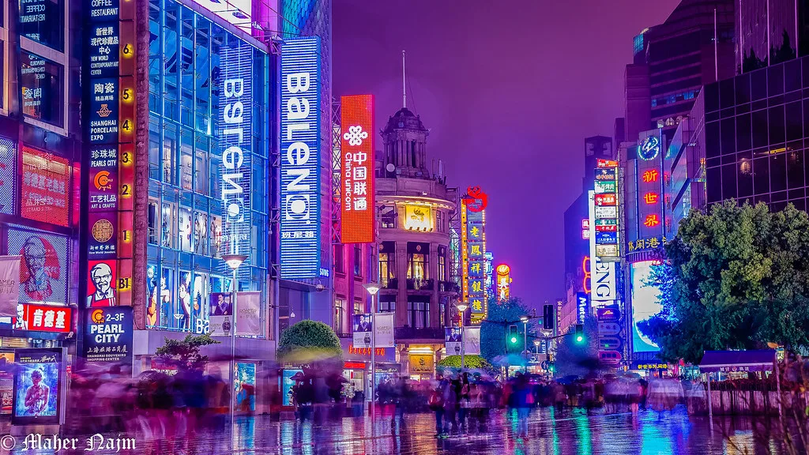
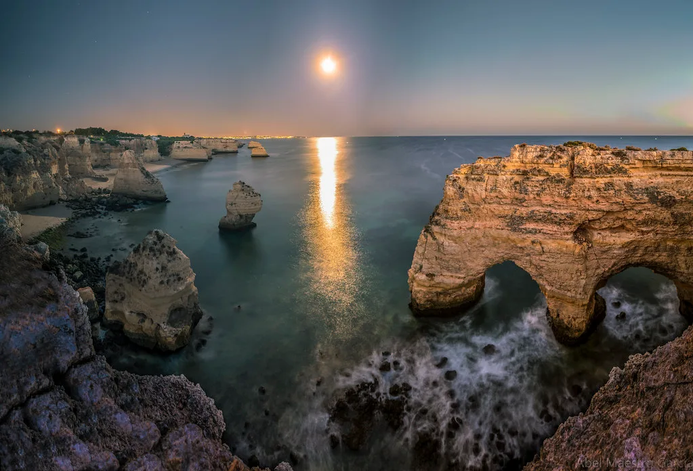
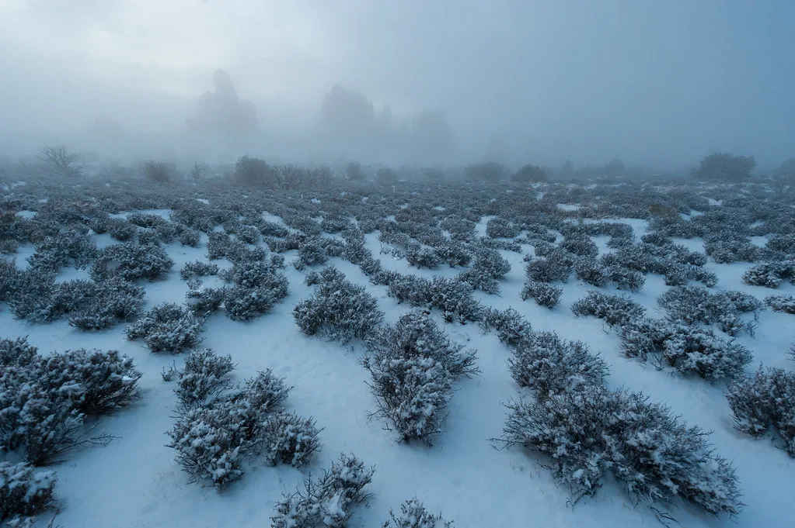
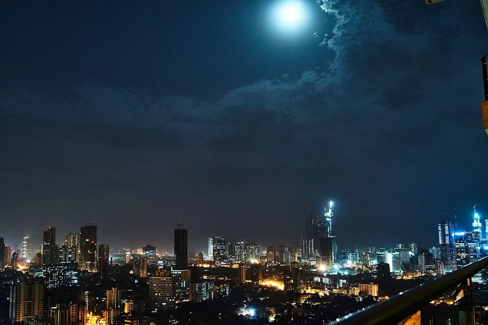

사진가 두 명과 그래픽 디자이너 한 명이 꾸리는 작은 스튜디오입니다. 촬영부터 보정, 편집 디자인까지 한 팀 안에서 끝냅니다. 2019년 서울 성수동에서 시작했습니다.

완료 새벽 네 시의 도시 도시 야경장노출 아무도 없는 시간의 골목을 12초씩 열어 두고 담았습니다. · 2025 · 개인 작업 완료 유리와 안개 제품스튜디오 조명 병 표면의 결로를 보정 없이 조명만으로 만들었습니다. · 2025 · 커머셜
운영중 물결 — 브랜드 아이덴티티 로고패키지가이드 해안가 카페의 이름과 얼굴을 처음부터 다시 그렸습니다. · 2024– · 브랜딩
완료 겨울 인물 열두 사람 인물자연광 눈 오는 날 창가에서만 찍은 열두 장의 초상입니다. · 2024 · 개인 작업 완료 야간 러닝 캠페인 광고아트디렉션 스포츠 브랜드의 야간 러닝 키비주얼과 화보를 맡았습니다. · 2025 · 광고 완료 도자 공방, 손의 기록 다큐멘터리흑백 석 달 동안 한 공방의 손만 따라다닌 마흔 컷입니다. · 2023 · 다큐멘터리
어두운 곳에서모든 촬영은 아래 장비 안에서 끝냅니다. 렌더가 아니라 실제로 찍습니다.